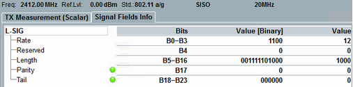
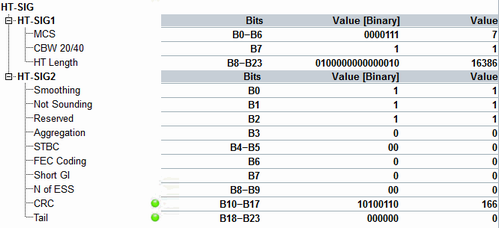
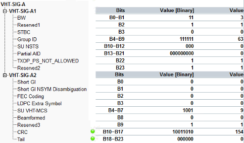
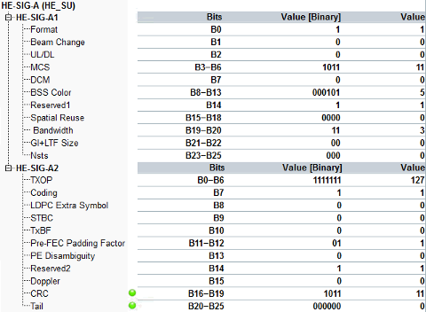
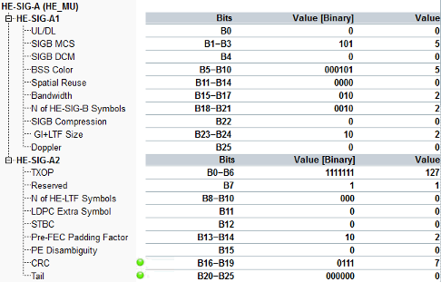
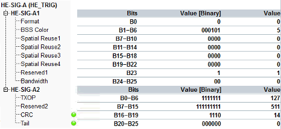
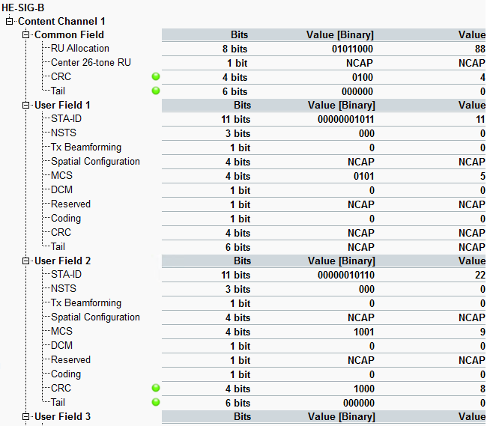

View TX Measurement (Scalar) for Signal Fields Info
The view contains a table with the reported signal fields of various PPDU formats. The column "Bits" lists bit numbers, where the parameter is signaled. The "Value" columns indicate the signaled values in binary and decimal formats.
For check bits, the instrument indicates passed (green) or failed (red) check verdict.
The displayed results depend on signal PPDU format:
- "L- SIG": legacy signal field for NON_HT (SISO only)
See also IEEE 802.11, section 19.3.9.3.5, L-SIG definition.
Signal fields info results - "HT-SIG": high throughput signal field for 802.11n (single user MIMO only)
See also IEEE 802.11, table 19-11, HT-SIG fields.
- "VHT-SIG-A": very high throughput signal field VHT-SIG-A for 802.11ac.
See also IEEE 802.11, table 21-12, Fields in the VHT-SIG-A field.
- "HE-SIG-A (HE_SU)": high efficiency signal field HE-SIG-A for 802.11ax, single user MIMO.
See also IEEE 802.11ax, 28.3.10.7 HE-SIG-A.
- "HE-SIG-A (HE_MU)": HE signal field HE-SIG-A for 802.11ax, multi user MIMO.
See also IEEE 802.11ax, table 28-19, HE-SIG-A field of an HE MU PPDU.
- "HE-SIG-A (HE_TRIG)": HE signal field HE-SIG-A for 802.11ax, trigger based uplink single user MIMO.
See also IEEE 802.11ax, table 28-20, HE-SIG-A field of an HE TB PPDU.
- "HE-SIG-B": HE signal field HE-SIG-B for 802.11ax, OFDMA and multi user MIMO.
See also IEEE 802.11ax, section 28.3.10.8.5 HE-SIG-B common content and section 28.3.10.8.6 HE-SIG-B per-user content.
For query of the results via remote control, see "Signal Fields Info".